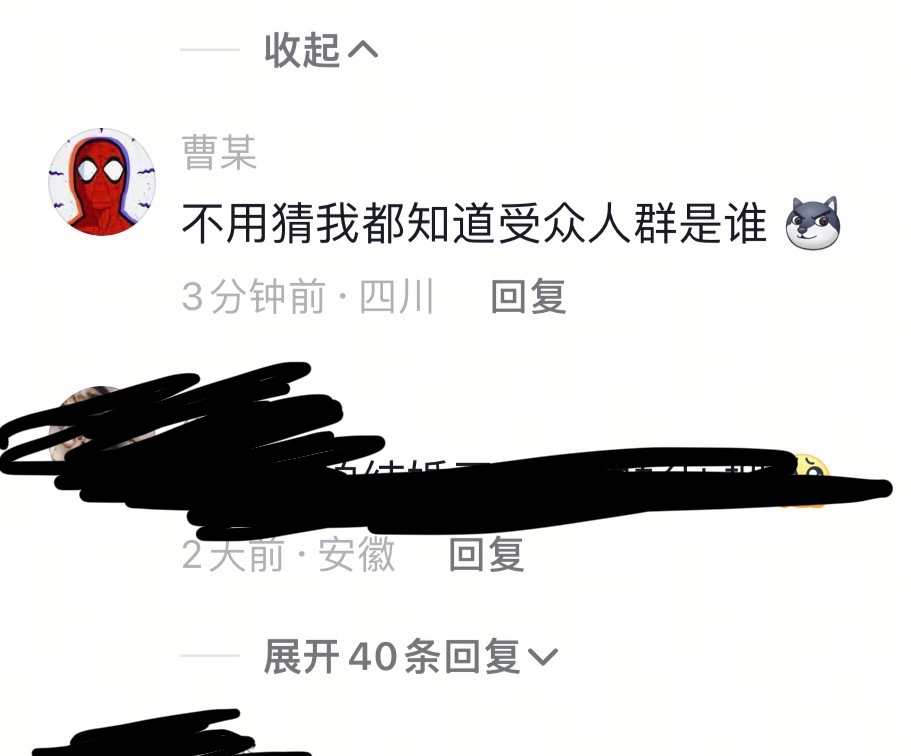
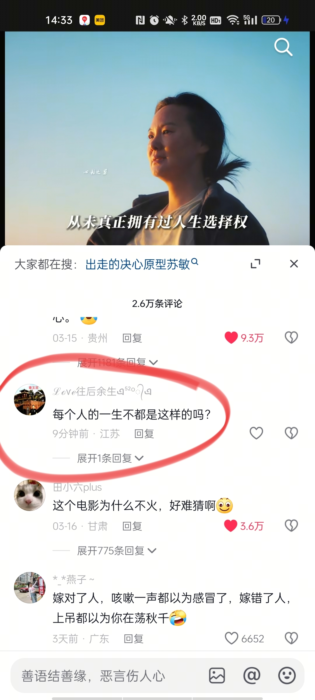

沈阳人此时此刻的表情
沈阳人看完[捂脸]
看完 突然理解了这句话：“一个家庭突然变的不亲了，那是因为，原本吃亏的那个人，不愿意吃亏了。懂事的人一旦不配合，就会被认为没良心。”[泪奔]
该片根据郑州50岁自驾游阿姨苏敏真人故事改编而成，讲述了一位50岁的普通女性在日复一日的家庭压力下，勇敢出走，独自追寻梦想的故事。
这个电影为什么不火，好难猜啊[微笑]
故事原型的女主人公

不用猜就知道什么性别[赞][赞][赞] 
嫁对了人，咳嗽一声都以为感冒了，嫁错了人，上吊都以为你在荡秋千[捂脸]
电影放完男演员姜武拿到了宝马的商务，却不是故事主体的女演员咏梅。故事在这一刻又形成了闭环。
那男的演的真的太真实了，简直就是我爸
“这个家所有人的荣光，都砌在我的脊梁骨上，却连一点油腥子都不肯分给我。油烟机轰鸣声里藏着我的功名簿，我的血管里流淌的不是血，是洗洁精。”
最后一个镜头太妙了，小雪在喊妈妈的时候，她的孩子也在背后喊妈妈。有时候说男人在上班，可是女人也在上班，为什么永远都是女人顾及孩子和家里
她爸不让她上大学，之后还要怪她没个正经工作，哇噻[尬笑]
现在故事原型已经成功离婚了，但是是赔了十几万才成功离婚的[愉快]
一堆人说现实与电影恰恰相反[黑脸]实际上电影还是美化了很多[憨笑][赞]
太窒息了 真的给我一种结婚就会完蛋的感觉 我真的要畏惧了[憨笑]
我一开始也心疼我妈，替她不值，但当她被同化的开始催我成为下一个她的时候，我就已经不觉得她可怜了
[泣不成声][泣不成声]所以女孩子不要用婚姻逃离原生家庭，用挣钱
我是个男的，觉得这电影挺好看的，当时看的很认真，和两个同学一起看的，结果他们一直说不好看不好看，看完还说是烂片，说电影里没一个正常人，说女主也不正常。理解不了他们是怎么想的[躺平]
看这部电影的时候，我感觉在看恐怖片[微笑]
我认为结婚率下降是因为很多原因，不是说我们看了个视频就害怕结婚，女性没有那么愚笨，没必要阴阳怪气的
我妈自己干买卖，干的好了，我爸就给她拆台，男的有的时候就怕女的比他能干，比他重要
我妈妈比原型还惨，被指手画脚被辱骂被奚落，被逼生出了五个才生到儿子，中间还另外堕胎，还有一个妹妹到三岁死了，我现在28岁了，她们俩的婚姻就快过了三十年，从我有记忆起我爸就小三不断，前两年终于离了，我告诉我妈不要怕有我做你的后盾，我已经把养我妈规划在我的人生里了，现在能力有限一个月只能给三千，她的人情往来所有开销我也全权负责，每次出去玩都带着她，带她打扮漂亮给她拍美美的照片，我的工资有一半都给我妈花了，她想给我接送一下女儿就接送，想出去上班就出去上班。
跟我爸一个德行[憨笑]一股无名火
我好像看见了我妈，看见了我自己，我却无法改变
别人的伞都是像妻子倾斜，而他的伞骨却戳着我的肩胛骨，催我快跑，多么痛的领悟啊！[流泪]
要啥没啥，天天当自己是主。。。。
0秒猜出性别[好开心] 
每次看这种，我就是在给我自己提醒，一定不要变成这种男人[尬笑]
来个男的说一下，是真的吗？
如果全中，兄弟你与我一样35了吧
32了欠了5万块了 心好累……[流泪]
太子殿下死于脑出血
好好好背着李健跑
母语尴尬竟然在李健这里完全不存在[流泪][流泪][流泪]
李健老师本人的处理一定比AI强很多，感觉他风格还是很明显的，而且AI模仿不出来
他真合适歌咏春夏秋冬
绝了，以后多多ai李健
好像他就在面前深情款款的看着你 真诚无比 [流泪][流泪]
李健老师的粉丝们～靠你们了[微笑]李健老师没有抖音，你们见着他的时候给他看这个视频，让他亲自唱一个完整版[干饭人]
这个中文版，我一直以为是我先入为主，听了好多博主唱的都没有原版好听，但听了这个AI李健的真的绝了[送心]
评论区别喊李健粉丝了 李健粉丝也找不到他 失踪好几个月了 只用老年机怎么找他
《用琴声结账》，法国果然是最浪漫的国家[玫瑰]
第二杯咖啡免了，当是用琴声结账 好像是只在文艺作品中才会出现的话[流泪][流泪][流泪][流泪][流泪][流泪]
音色音准很好啊。看来这个琴虽然很老了，但也是被爱着的。
张老师，这首《在春天消失之前》去哪能找到完整版啊？太好听了
下次记住直接弹琴，少喝点热巧克力，那玩意儿太侯挺[捂脸][捂脸][捂脸][捂脸]
语言到不了的地方，音乐解决
法国咖啡怎么那么稠 像酸奶一样 感觉很好喝[快哭了]
只有我好奇为什么🇫🇷热巧克力这么稠吗[宕机]
我也感觉在外面太安静就让人好不自在好难受[衰]
真的是天才，在滑县去坐高铁，开车一个小时也走不到高铁站，太天才了
有没有即失眠又早醒的[九转大肠]
既焦虑又抑郁的在这集合[玫瑰]
丢枪失而复得之后，肥雪整个人是轻松写意的，眉飞色舞
相信联邦政府[赞][赞]
请美国人理智爱国
不来不知道[我想静静]希望大家祛魅
我甜甜圈还是没有消息[泣不成声]
文文和明明打起来了[发呆]
打了很多字母，最后还是删了[憨笑]
为什么发这种视频，评论这么少呢好难猜呀[捂脸]
赛博皮卡也是有前瞻性的产品了[憨笑][赞]
不可能用鸡蛋的，鸡蛋多贵啊[白眼]
你用假饵钓真鱼，她用假意换真心”
Read more: